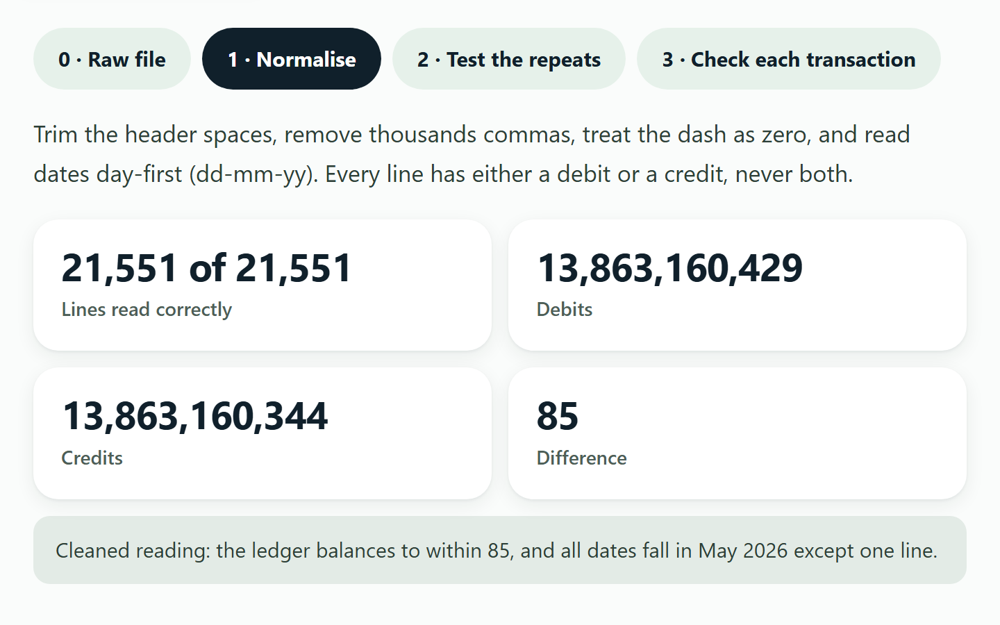

Real public data · CC0
Cleaning a real accounting ledger
Is the ledger really out of balance?
What does a 21,551-line ledger actually say once it is read correctly?
Click through a real public ledger: raw (it seems out of balance by 124,929), normalised (it balances to within 85), a rule I tested and rejected, and open questions.